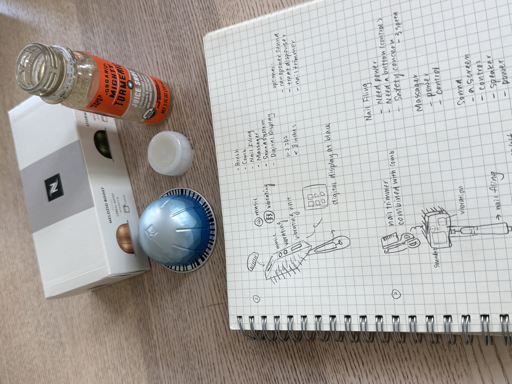
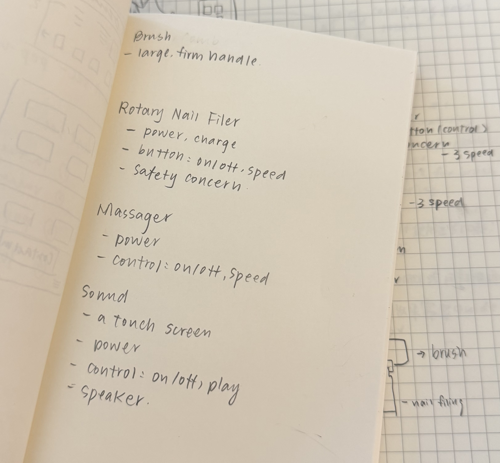
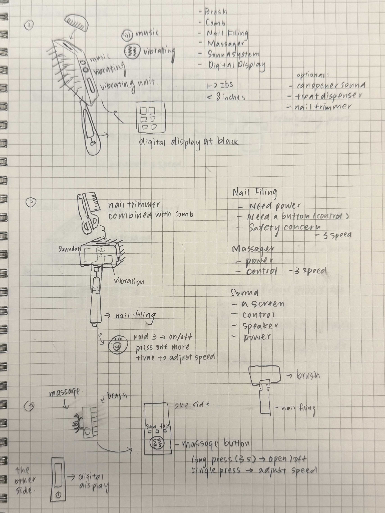
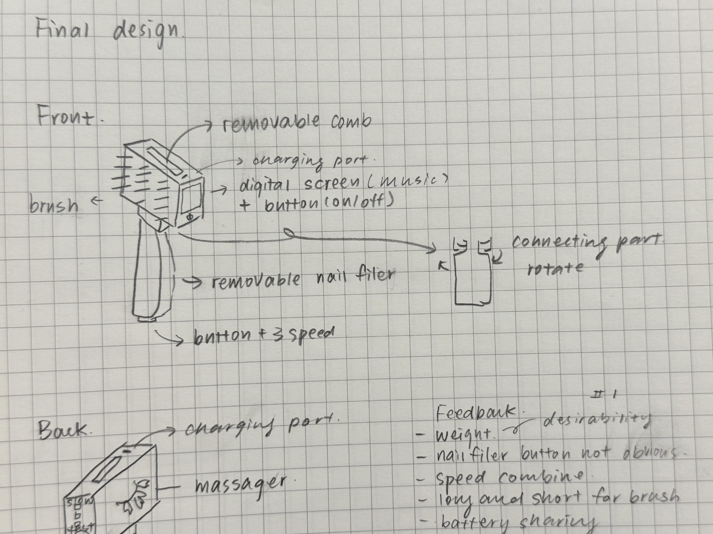
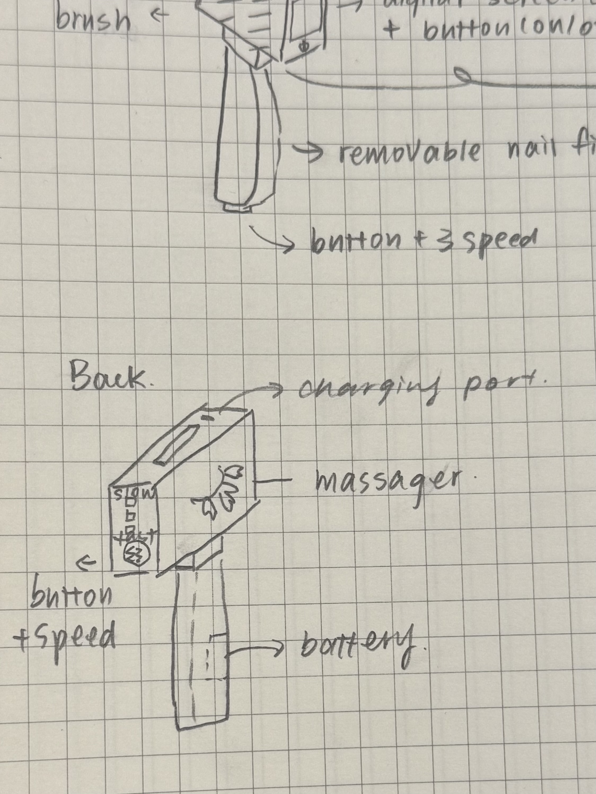

Selected materials available at home and matched them to the design so the prototype could be assembled with accessible objects.
Assignment 1
This device is an all-in-one pet brush, nail filer, and pet massager. This is the Swiss Army Knife of 21st Century pet care!

Prompt
The assignment asked for a single appliance that could support brushing, claw filing, massage, and calming sensory feedback. The prototype focuses on combining these functions into one coherent object while still keeping the controls understandable for the human and non-threatening for the pet.
Features
Supports full-body fur brushing, plus fine-grained de-matting and flea removal.
Files nails or claws with on/off control and three selectable speed levels.
Provides pet massage with on/off control and three vibration speed settings.
Lets the user play five soothing sounds to help calm the pet during grooming.
Adds a can-opener sound as a sixth audio option to call the pet over at the start.
Feature Review / Design
Before I run into design, I mapped out requirements for each feature. My main focus was balancing usability and feasibility while
keeping the appliance compact enough to feel realistic as a handheld grooming tool.
Beyond the functional requirements, I also considered force, safety, weight, and size.
The brush and comb need enough leverage for the user to apply pressure effectively,
while the electric functions raise additional safety concerns around power, charging,
and controls. The device also has to stay within the assignment limits of 1 to 2 pounds
in weight and a maximum length of 8 inches, so the combined form cannot become too
heavy or oversized.

Design exploration
These sketches document the progression from early feature mapping to a more resolved front-and-back configuration. They helped me work through component placement, removable attachments, control logic, and how the different grooming functions could fit within one handheld form.



Prototype process
User testing & critiques
About six people tested the prototype after a short one-minute introduction. In general, both the human user and the cat user responded positively to the concept and seemed satisfied with the overall interaction.
Liked
Testers said the weight felt realistic, and the separate manual comb felt strong enough to apply force confidently.
Confused
The nail filer button was not obvious, the buttons overall felt hard to find and slightly excessive, and the nail filer attachment needed clearer guidance for how to remove and use it.
Recommendation
Testers recommended combining speed controls, offering both a long and short comb option, and sharing the power source across the product.
Detailed feedback prompt: Are you confident about using all the functions?
Key responses included: the buttons were hard to find, there were too many separate controls, the nail filer was not immediately clear to use and would need guidance, and the manual comb felt easier to use with force.
Change plan
The next version should be paired with a short instruction guide so users can understand unfamiliar functions more easily. The product itself should also include clearer labeling and usage cues to help users feel more confident operating each mode.
I would also simplify the interface by reducing the number of separate buttons and moving toward a more centralized control area. Finally, I would explore whether some of the functions could share the same power source instead of treating each feature as a fully separate system.
Demo video
First 1 min should be enough.
Full testing video link: Open full testing video on Google Drive
AI use
This website was built mostly through vibe coding, although I designed the overall visual style myself. I wrote the content for each section on a single page first and also wrote instructions for each section as a starting point for implementation.
As I pasted content into the site, AI improved some of my writing while formatting it for the webpage and occasionally generated section titles. I can confirm that more than 95% of the content is still my original work.
One special case is the process section: I wrote most of that content in Chinese first so I could describe the build steps accurately, since I did not know the English phrasing for some of them.